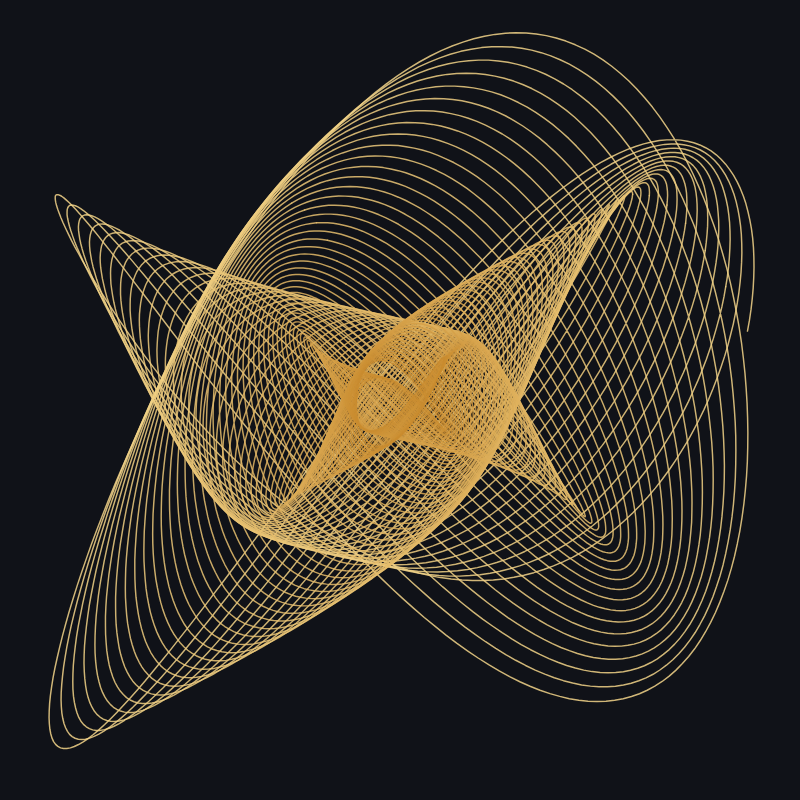

How two pendulums can draw a musical interval, and where the idea comes from.

A harmonograph is a machine that draws with pendulums: one swings the pen from side to side, another swings it (or the paper) back and forth, and the pen traces the combination of the two motions.
When the pendulums swing at speeds in a simple ratio, the drawing closes on itself in a figure that is both regular and surprising. Because pendulums slowly lose energy, the figure shrinks as it goes, and the lines crowd together into the shimmering spirals and moiré patterns that made the harmonograph a favorite of Victorian drawing rooms.
The ratios that please the ear are the same ones Pythagoras found on a vibrating string: 1:2 for the octave, 2:3 for the fifth, 3:4 for the fourth, 4:5 for the major third. Set two pendulums to these ratios and the eye sees what the ear hears: the simplest ratios give the simplest, most stable figures, and more complex intervals give busier ones. Anthony Ashton's little book Harmonograph: A Visual Guide to the Mathematics of Music (2003) made this link between the figures and musical harmony popular again, and it is why the harmonograph sits comfortably next to the music of the spheres.
A Lissajous figure is the harmonograph's ideal case: two perfect oscillations at right angles that never lose energy, so the curve repeats forever. They are named after the French physicist Jules Antoine Lissajous, who in 1857 made them visible by bouncing a beam of light off mirrors fixed to two vibrating tuning forks, although the American mathematician Nathaniel Bowditch had studied the same curves in 1815 with a compound pendulum. Engineers still read them on oscilloscopes to compare two signals, and a 1:3 Lissajous curve is the logo of the Australian Broadcasting Corporation.
The drawings are computed, not photographed: each pendulum is a sine wave, slowly damped for the harmonograph, and a third, rotary pendulum can add circular motion. Everything is drawn as SVG, so a download stays sharp at any size. Listen plays the two pendulums as two tones, one in each ear, at the same ratio as the figure.